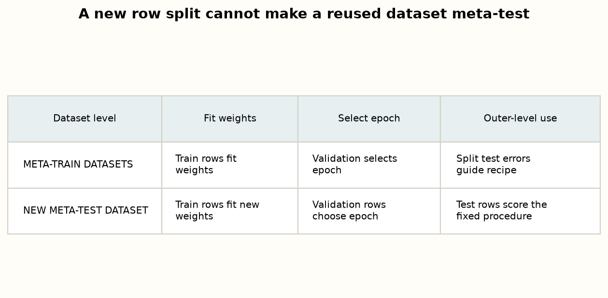
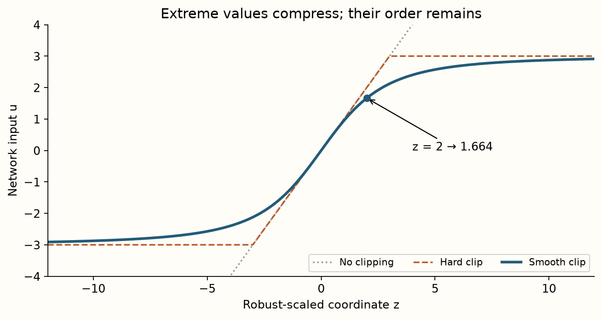
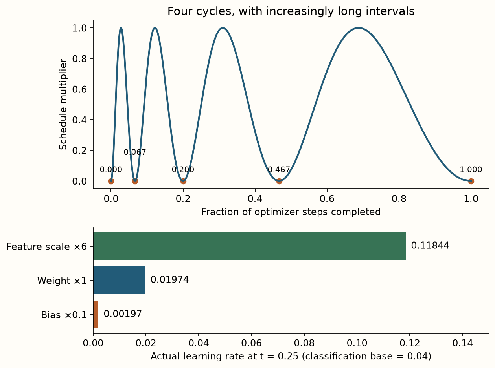
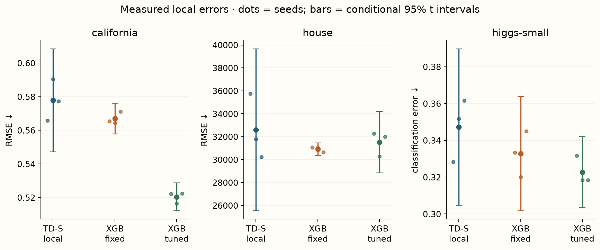
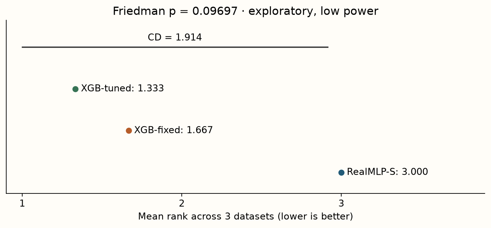
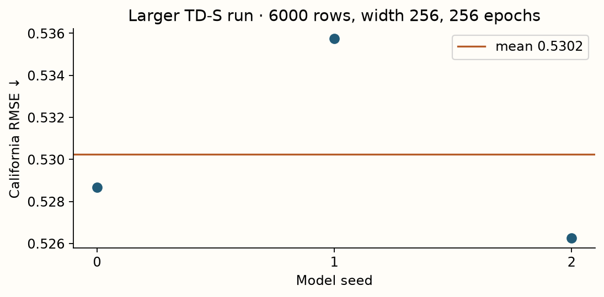

Year 2 · Quarter 2 · Lesson 053
RealMLP & strong defaults
Implement the recipe, then audit where its tuning happened.
TabR changed which examples a predictor consults. RealMLP asks how far a carefully designed multilayer perceptron can go with a fixed training recipe. Your win is to build the numeric simplified variant and explain a fair comparison with tuned XGBoost. For the relational mission, this raises the baseline bar: an architectural gain must survive comparison with a competently trained single-table network.
Start with Holzmüller, Grinsztajn & Steinwart, Better by Default, v3, §2–3 and Appendix A.2. Read the core sections in one sitting; use the notebook for implementation and evidence in a second. The lesson distinguishes full RealMLP-TD from the authors’ simplified RealMLP-TD-S. Here, TD means tuned defaults; S means simplified.
Recall before reading
1. Default is a transfer claim
A parameter is learned while fitting a model, such as a matrix entry. A hyperparameter controls fitting, such as hidden width, learning rate or dropout probability. A default configuration specifies these choices before seeing a new task’s results. Calling it default says little about the effort spent developing it.
The paper develops configurations across a collection of meta-train datasets and evaluates their transfer to separate meta-test datasets. “Meta” identifies the level: the objects being separated are entire prediction problems, not merely rows. Within each problem, training rows fit weights, validation rows guide permitted selection, and test rows score the resulting procedure. These two boundaries solve different problems. Source: §2.

Suppose you try five learning rates on datasets A–D, freeze one, and train on E. That is default use on E. If you inspect E’s test error, change the rate, and report the new error as untouched evaluation, E has entered development. The same issue appears when researchers repeatedly change architectures against a familiar benchmark. A train/test row split does not erase that history.
A frozen procedure can still use validation to choose an epoch. “No per-task hyperparameter search” does not mean “no validation.” The paper’s recipe explicitly includes checkpoint selection. The relevant claim is that the entire procedure was fixed before evaluation on new tasks.
What the paper actually supports
Section 5.2 and Figure 2 report that RealMLP's gap between tuned defaults and per-task optimization stays similar on meta-train and meta-test. This supports transfer of its recipe. The paper's HPO baseline uses 50 random-search trials per dataset split; our six-candidate tree search is much smaller.
| Published finding | Boundary on the conclusion |
|---|---|
| RealMLP/RealTabR are competitive with boosted trees on aggregate benchmark scores. | On the Grinsztajn classification benchmark, RealMLP is worse than CatBoost. The winner depends on the benchmark and metric. |
| Selecting among several tuned-default model families is often competitive with single-family HPO at lower runtime. | This supports a portfolio procedure, not the claim that one MLP always wins. |
| Both architectural and training changes contribute. | Cumulative ablations depend on addition order and retune the learning rate. They do not identify a context-free contribution for each component. |
The paper also reports an XGBoost rare-category encoding bug, discusses metric dependence, and leaves transfer to distribution shift uncertain. Our numeric-only test does not exercise that categorical bug. Read these results as evidence for testing strong neural and tree recipes, not a universal architecture ranking.
The paper uses ten random 60/20/20 splits per dataset and aggregates errors across tasks, with dataset-group weighting on meta-train. Its shifted geometric mean adds a small positive offset before taking logs, reducing sensitivity to zero classification error. That aggregate is not a raw California RMSE, and neither is interchangeable with our rank summary. Do not compare a local number to a paper figure merely because both axes say “error.” Source: §2.2.
A default is a learned decision made before this dataset¶
A hyperparameter chosen using the current validation set is a local adaptation. A default chosen on other development datasets is transferred knowledge about which training procedure often works. Both can be useful, but they spend information in different places. “No tuning” on a new dataset does not mean no human or computational effort went into designing the recipe.
RealMLP is valuable here because it treats the training recipe as a central object. Input scaling, parameterization, activation, optimizer groups and learning-rate schedule jointly determine how an otherwise familiar MLP learns. Comparing its network diagram alone with an older MLP misses much of the proposal.
Separate the full method from the specific TD-S variant implemented in the lab. A reduced-width local run also differs from a published-width recipe. Use these names in result tables so an exploratory run cannot silently inherit the scope of the paper's strongest result.
The appropriate baseline question depends on deployment. If you can afford extensive search, compare tuned procedures under a declared budget. If you need a reliable first run on many tables, compare defaults and measure their failure rate as well as average score. A procedure that is excellent after rescue tuning may be a poor default for an automated system.
Defaults can overfit their development suite too. A recipe that repeatedly receives feedback from the same collection of datasets may exploit their shared properties. The strongest transfer evidence comes from tasks that did not guide those design decisions. This is the dataset-level analogue of keeping test labels out of model selection.
2. Model architecture
Lesson 053 / architecture study
RealMLP-TD-S · the recipe is in the path
Trace this: Which transformations control input scale before the first hidden activation?
The forward path
- Fit robust preprocessingTraining median/range statistics; smooth clipping of standardized values.
B × F - Learn feature scaleTrainable input scaling precedes width-scaled linear transformations.
B × F → B × hidden width - Repeat hidden layersThree hidden layers; SELU for classification, Mish for regression.
local width 64; paper recipe 256 - Predict and selectZero-initialized output head; validation selects a scheduled training checkpoint.
B × output width
Inside the key operation
Smooth clipping preserves order
| stage ↓ | z=0 | z=3 | z=6 |
|---|---|---|---|
| c(z) | 0 | 2.121 | 2.683 |
Numeric transform values are computed from the displayed formula. Constant and zero-IQR features have explicit fallback policies.
Variant & evidence. Local numeric TD-S variant. Robust preprocessing is fitted only on training rows. A reduced-width local run is distinct from the published recipe-size experiment.
Our scope is the complete numeric forward path of RealMLP-TD-S, with its training recipe. The full TD variant additionally has feature embeddings, parametric activations, data-dependent initialization, scheduled dropout and weight decay. Those are not secretly present in this lab, and its results must not be labeled full RealMLP-TD. For categorical inputs TD-S uses one-hot encoding, but our implementation deliberately accepts numeric arrays only. Source: Appendix A.2 and Table A.1.
The model processes one row at a time. Preprocessing yields a vector u of length p. Learned feature scales produce h₀=u⊙s, where ⊙ means coordinate-wise multiplication. Three hidden stages transform the vector with a linear map and a nonlinear activation. A final linear head predicts either two class scores or one standardized regression target. B simply groups independent rows for efficient computation.
For classification, logits are unnormalized class scores. Softmax turns scores a into probabilities using exp(aᵢ)/Σⱼexp(aⱼ). Even binary classification has two output neurons here. For regression, predictions are converted back to the target’s original units using the training target mean and standard deviation. TD-S does not clip predictions to the observed target range.
There is no pretraining stage or retrieval memory. The target is supplied to a loss during supervised training; it is not an input to the forward pass. Once fitted, inference needs the row, preprocessing statistics and learned weights.
3. Make input scale predictable
A neural update depends on input magnitudes. A currency column, a binary indicator and a heavy-tailed count can otherwise arrive on very different scales. RealMLP first centers each column at its training median and rescales by its interquartile range (IQR), the 75th percentile minus the 25th percentile. Quantiles describe positions in a sorted sample. Extreme observations therefore have less influence on these fitted statistics than on the mean and standard deviation.
For one column, let m be its median, q its IQR and r its maximum minus minimum, all computed on training rows. Set a=1/q when q>0; if q=0 but r>0, use a=2/r; if the column is constant, use a=0. Then z=a(x−m). The fallback matters for sparse columns: most values can be identical while a few differ. A constant training column stays zero at inference even if a new value appears.
Next apply u = z / √(1 + (z/3)²). This smooth clipping transformation approaches −3 and +3 in the tails. Unlike hard clipping, distinct finite inputs remain ordered in exact arithmetic. Its derivative is (1+z²/9)−3/2: positive everywhere, near one around zero and small in the tails. Saturation compresses differences; it does not prove that outliers are irrelevant. Source: author preprocessing.

Trace: with median 0, IQR 2 and raw x=4, z=2 and u≈1.664. Predict what happens as z grows before moving the slider. Its fitted statistics stay fixed.
The notebook’s first two tasks implement the fitted statistics and the smooth transform. Fitting preprocessing on validation or test rows would change the information contract. Our loader fits an extra median imputer on training rows if needed; that is an explicit local safeguard, whereas the paper benchmark removes rows with missing numeric values.
Derive the transform one stage at a time¶
The local numeric preprocessing first centers a feature by its training median and scales it using a training interquartile range. The median is a location estimate; the interquartile range measures the middle half of the data. These estimates are less directly controlled by a single extreme value than the mean and full range.
If the interquartile range is zero but the feature is not constant, the implementation uses a fallback based on half the training range. If the feature is constant, it assigns a zero scaling factor. These branches prevent division by zero and define what an uninformative training coordinate contributes. They are part of the algorithm, not incidental numerical cleanup.
After scaling, the smooth clipping function is c(z)=z/√(1+(z/3)²). At z=0 it returns 0. At z=3 it returns 3/√2≈2.121. At z=6 it returns 6/√5≈2.683. As z grows positive, the output approaches 3; for large negative z it approaches −3.
Unlike hard clipping, this function remains strictly increasing for every finite z. Its derivative is (1+z²/9)^(−3/2), which is positive and becomes small in the tails. Large values are compressed rather than all mapped to exactly the same boundary. This preserves their ordering while limiting their magnitude.
The transform does not make all features Gaussian, and it does not remove every outlier problem. It controls one aspect of input scale. A rare but informative extreme can become harder to distinguish after compression; whether this trade-off helps is empirical.
Trace a future value using stored training statistics. Recomputing the median or scale for each query batch would make the prediction depend on unrelated co-batched rows. The preprocessing state should be fitted once under the declared training boundary and serialized with the model.
4. Same function family, different optimization
A learned feature scale sⱼ multiplies coordinate uⱼ before the first dense layer. All scales start at one. This can downweight an input, but it is soft feature selection: scales are not binary masks, may become negative, and can trade off against downstream weights. A small scale alone is not a reliable causal-importance score.
The dense layers use neural tangent parameterization (NTP): a = hW/√dᵢₙ + b. Here h is [B,dᵢₙ], W is [dᵢₙ,dₒᵤₜ], and b is [1,dₒᵤₜ]. The factor divides the matrix product, not the bias. If independent centered inputs and weights each have variance one, a sum of dᵢₙ products has variance dᵢₙ; dividing by √dᵢₙ keeps its variance near one. That is an initialization argument with assumptions, not a guarantee about trained activations.
One can absorb 1/√dᵢₙ into a conventional linear weight, so this does not by itself create new functions. It changes how stored parameter updates translate into function changes. An update ΔW produces Δa=hΔW/√dᵢₙ. Copying the same learning rate between parameterizations therefore does not copy the effective learning dynamics. Adam’s normalization adds another reason to avoid claiming identical optimization from algebraic forward equivalence.
Use the diagram’s fixed weight column [1,−1,2,1] and bias 0.5. Changing only the first scale from 1 to 2 makes the input [2,2,−1,0], its dot product −2, and the preactivation −2/2+0.5=−0.5. The original preactivation was −1. Predict the sign change threshold before using the control.
Hidden weights and biases start as standard normal draws: a distribution with mean zero and variance one. The output weights and bias start at zero. Initial regression predictions therefore equal the training target mean after unscaling; initial two-class probabilities are (0.5,0.5). The zero output matrix initially blocks loss gradients into hidden layers, while the head can receive gradients. This does not keep the network frozen: after the head changes, gradients can propagate upstream. Source: NTPLinear and SimpleMLP.
Classification uses SELU: approximately 1.0507x for positive x and 1.0507×1.6733×(exp(x)−1) otherwise. Regression uses Mish: x tanh(log(1+exp(x))), computed with a numerically stable softplus. Both preserve a nonlinear response to negative inputs; neither is a learned activation in TD-S. These are prescribed recipe choices, not mechanisms we separately prove superior in this experiment.
Reparameterization changes the optimizer's coordinates¶
Consider a linear layer written as y=xW/√d+b, where d is the input width. A conventional layer could represent exactly the same function by storing W′=W/√d. Equal representational capacity does not imply equal gradient-descent trajectories, because the optimizer updates the stored parameters rather than abstract functions.
In one coordinate, let the effective coefficient be a=w/√d and the loss derivative with respect to a be g. Then ∂L/∂w=g/√d. A gradient step w←w−ηg/√d changes the effective coefficient by Δa=−ηg/d. Directly updating a with the same nominal learning rate would instead give Δa=−ηg. Parameterization and learning rate must therefore be interpreted together.
This illustration isolates plain gradient descent; adaptive optimizers add their own state and scaling. It still explains why “same width and learning rate” is not enough to identify the same training procedure. Read the actual layer definition and optimizer parameter groups.
The local TD-S recipe gives different learning-rate factors to input-scale parameters, ordinary weights and biases. The input scale can change how strongly each feature reaches the hidden network. Bias updates move activation thresholds. Their roles and desired update magnitudes need not match those of a large weight matrix.
The zero-initialized output layer provides another instructive gradient trace. On the first backward pass, hidden-layer gradients transmitted through an exactly zero output weight are zero, while the output layer can receive a nonzero gradient from the hidden activations. After the head moves, gradients can reach earlier layers. This is an optimization behavior you would miss in a box labeled only “MLP head.”
When implementing the model, inspect parameter names, group membership and initial values. A network can have the correct forward shapes and still train differently because every parameter accidentally received the same optimizer settings.
5. Four opportunities to settle
A learning rate controls the size of an optimizer update. Adam maintains moving averages of gradients and squared gradients, using the latter to normalize each coordinate’s step. TD-S uses β₁=0.9 and β₂=0.95, rather than Adam’s usual β₂=0.999. The smaller second-moment coefficient responds faster to recent squared gradients. It is one part of a joint recipe; this lab does not isolate its causal contribution.
Let t be the number of completed optimizer steps divided by the planned total. The multiplier is c(t)=½[1−cos(2π log₂(1+15t))]. The logarithm traverses four integer intervals as t moves from 0 to 1, producing four cycles. Its valleys occur at t=0, 1/15, 3/15, 7/15 and 1. The intervals grow longer. This differs from equally spaced restarts and from one monotonically decreasing cosine.

The base rate is 0.04 for classification and 0.07 for TD-S regression. Multiply it by c(t), then by 6 for feature scales, 1 for matrices and 0.1 for biases. A scale has a larger learning rate, but its actual update still depends on gradients and optimizer state. At the very first step t=0, all rates are zero: a backward pass can update Adam’s moments without moving the parameters.
The published recipe trains for 256 epochs, with batches of 256. An epoch is a traversal of the training data; the standalone implementation drops an incomplete final batch. We match that convention. The learning lab uses 64 epochs, compressing all four cycles into fewer updates. This is a protocol deviation, not an innocuous speed improvement.
Classification minimizes cross-entropy with 0.1 label smoothing: the target distribution is 90% the observed one-hot label plus 10% uniform mass. For two classes, a class-1 target becomes (0.05,0.95). This can reduce pressure toward extreme scores; it does not establish calibrated probabilities. Regression minimizes mean squared error of standardized targets. Following the standalone implementation, our target statistics use training labels only; the paper text describes train-plus-validation target scaling.
Run every planned epoch, record validation classification error or regression error, and restore the last best epoch. For errors [0.40,0.30,0.35,0.30], choose epoch 4. A patience rule could stop before a later cycle improves; we do not insert one for the neural model. The test targets never decide which epoch wins. Source: §3 training and selection.
Read the schedule in normalized training time¶
The coslog4 schedule uses progress t between 0 and 1 and the factor s(t)=½[1−cos(2π log₂(1+15t))]. Define u=log₂(1+15t). As t moves from 0 to 1, u moves from 0 to 4, so the cosine passes through four cycles.
The troughs occur at integer u. Solving for t gives t=(2ᵘ−1)/15: 0, 1/15, 3/15, 7/15 and 1. The intervals between troughs grow rather than remaining equally spaced. This is why the schedule should not be described as four ordinary equal-length cosine cycles.
At a trough the multiplier is zero; halfway between integers in u it is one. Multiplying by the base learning rate gives the instantaneous rate. A correct implementation must define progress consistently at optimizer steps or epochs, including its endpoints. Off-by-one choices can skip the final settling point.
Changing the total number of epochs compresses or stretches the same normalized schedule. A small-budget run therefore gives fewer updates within each phase. It is not the published training trajectory merely viewed at lower resolution. Keep this limitation visible when interpreting a reduced experiment.
Validation checkpoint selection sits outside the schedule. The schedule controls which parameters are visited; validation chooses which visited state is retained. A good final training loss does not guarantee that the last epoch is the selected predictor. The local tie rule retains the latest exact validation tie, so report the selected epoch from the artifact rather than assuming it was the final one.
Diagnose a recipe before inventing an architectural explanation¶
If RealMLP underperforms, first inspect target scaling, constant-feature handling, parameter groups, schedule progress and selected epoch. Then examine whether the local width and training duration match the intended comparison. Only after these checks should you infer that the MLP's function class lacks a useful bias.
For an ablation, change one recipe component while keeping the rest and the split fixed. Re-tuning every other component may answer a valid “best adapted procedure” question, but it no longer isolates the effect of the removed component. State which question your experiment answers.
6. What exactly are we comparing?
The curriculum asks for RealMLP versus tuned XGBoost. “Tuned” needs a search space, budget and selection rule. We run six XGBoost candidates: depth in {3,6} crossed with learning rate in {0.03,0.1,0.2}. Each has at most 150 trees, validation early stopping with patience 20, row and column sampling of 0.8, and one CPU thread. Validation error selects the candidate; the first candidate, depth 3/rate 0.03, is also reported as XGB-fixed. It is our declared baseline, not XGBoost’s library default.
This is a comparison of deployment procedures: one fixed neural recipe versus a six-candidate tree search. It is neither equal wall-clock compute nor an exhaustive tree search. The fixed and tuned tree reports share the first fitted candidate; they are statistically dependent. XGBoost gets the imputed numeric values directly, while the neural arm also applies its prescribed transform. Holding out the same rows and using the same metric is appropriate; forcing identical preprocessing would change the methods being tested.
Data contract: three real numeric tasks—California Housing, House 16H and Higgs Small—from the author-released TabR archive already used in L052. We preserve those released train/validation/test boundaries and take label-blind row caps of 1200/600/600 with seeds 53/54/55. Model seeds are 0/1/2. Reusing this compact verified archive avoids requiring the full RealMLP benchmark archive for a CPU lesson. It does not recreate RealMLP’s datasets/splits protocol.
The full meta-train and meta-test classification/regression suites, the full Grinsztajn suite, and the categorical paths are unrun. Familiar source dataset names do not establish identical preprocessing, versions or splits. These three already familiar course datasets are not an untouched meta-test set for us. We freeze the lesson recipe before inspecting scores and make no new claim that our own defaults generalize to unseen tasks.
Prediction files, split row indices, source/data hashes, library versions, all validation candidates and selected epochs are recorded. Read the reproducibility contract, local evidence and source parity checks. The local target is a correct experiment with an honest INCOMPARABLE paper verdict.
7. Read the evidence without importing a story

| Task / error ↓ | TD-S local | XGB-fixed | XGB-tuned |
|---|---|---|---|
| California / RMSE | 0.57784 ± 0.01232 | 0.56698 ± 0.00366 | 0.52039 ± 0.00334 |
| House 16H / RMSE | 32597 ± 2844 | 30912 ± 225 | 31521 ± 1072 |
| Higgs / class. error | 0.34722 ± 0.01711 | 0.33278 ± 0.01251 | 0.32278 ± 0.00770 |
Values are mean ± sample standard deviation across three model seeds. RMSE is the square root of mean squared prediction error in original target units. Classification error is the fraction of wrong argmax predictions, not AUROC.
On California, the tree search reduces mean test RMSE by about 0.0466 relative to the fixed candidate, about 8.2%. On House, it raises test RMSE by about 608, about 2.0%. On Higgs, it lowers classification error by 0.0100, one percentage point. Selection improves validation by construction because the fixed candidate is in the search. It does not guarantee a test improvement.

Mean ranks are 3.000, 1.667 and 1.333. The Friedman statistic is 4.667 with approximate p=0.09697; the Nemenyi critical difference is 1.91362. The approximate test does not reject at 5%; it does not demonstrate equality. Three seeds do not increase the number of independent tasks from three to nine. Neither raw RMSE averaging across incompatible units nor treating seeds as datasets would repair that limitation.
The justified conclusion is narrow: the tree recipes have lower mean errors in this capped numeric experiment, and extra validation search can fail to improve a particular test set. It does not show that full RealMLP loses generally, that good defaults are useless, or that the paper was reproduced. We changed width, epoch count, benchmark splits and search scope.
8. Build it, then test your explanation
Download the student notebook · Read the prepared lab · Open in Colab after the files are pushed.
Four live TODO functions implement robust fitted statistics, smooth clipping, NTP linear computation and the four-cycle schedule. The model and trainer are visible PROVIDED cells. CHECK cells test zero-IQR and constant columns, an independent matrix case, gradient propagation and schedule extrema. Training calls your functions; changing a TODO changes the experiment. The solution is separately executed by the author.
For EXIT, report one selected neural epoch and one tree configuration; explain why validation selected them without seeing test labels. Report a dataset’s errors with seed uncertainty, the rank summary and the paper verdict. Then name one remaining experiment that would distinguish “too small a learning budget” from a robust disadvantage in this regime. A result without its protocol is not a complete answer.
9. Required next step: use the published recipe size
The larger operator uses the same visible numeric model with three 256-wide hidden layers and 256 epochs. Its closer preset takes 6000 California training rows, the full released validation and test sets, and three model seeds. The gated Colab cell runs the live notebook implementation; the Modal operator supports unattended execution and completed-seed resume. No cloud job is needed to read this lesson.

The larger run completed in 372.0 CPU seconds. California RMSE was 0.53024 ± 0.00493 (sample SD), with conditional 95% seed interval [0.51798, 0.54249]. Read the measured evidence. This is a demonstration, not a multi-task comparison: both data volume and model/training size changed, and the evaluation cap was removed. It remains INCOMPARABLE to the paper benchmark.
Presets are smoke (tiny wiring check), closer (published width and epochs, capped training rows), and paper (published width and epochs, full released California split, ten model seeds). The last name refers to model settings: it still does not reproduce ten new paper splits or the full benchmark. That work remains NOT_RUN. A single-task result has no valid scalar target for a benchmark-wide superiority claim.
modal run --detach modal/l053_paper_repro.py --preset closer
# Or locally, from the repository root:
python labs/_paper_repro_l053.py --preset closerThe conclusion ledger keeps three buckets: verified here (implementation checks and local comparison), paper claim (cross-dataset results from the cited source), and scale-up (this larger measured regime). The official-source check establishes forward and input-gradient agreement with copied weights, plus preprocessing and schedule agreement. It does not establish identical end-to-end training trajectories or full pytabkit runtime parity.
Ask me follow-up questions about any derivation, failing CHECK, or conclusion you cannot defend. After this lesson, L054 studies TabM: how to obtain multiple predictors efficiently. Carry this question forward: does the gain come from a better individual model, a better recipe, or an ensemble?